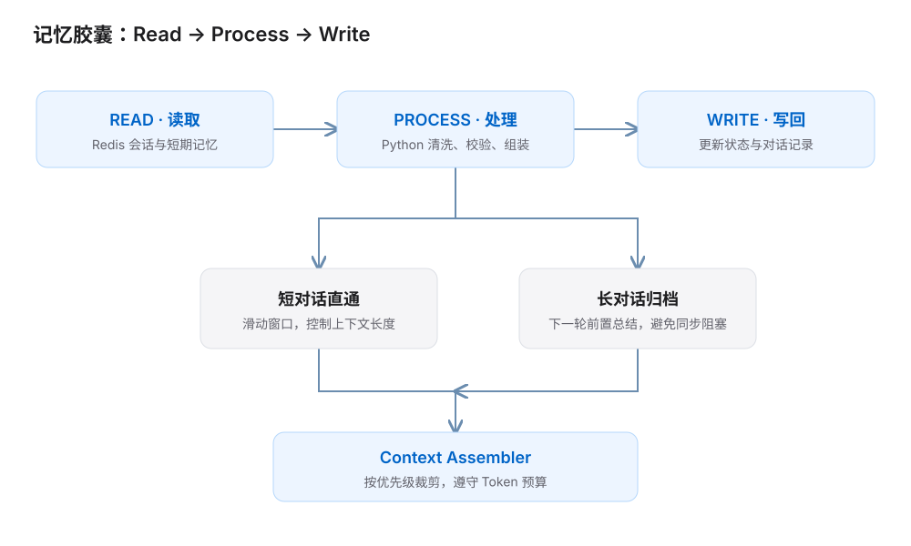
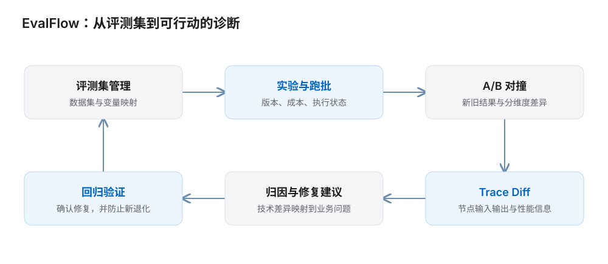
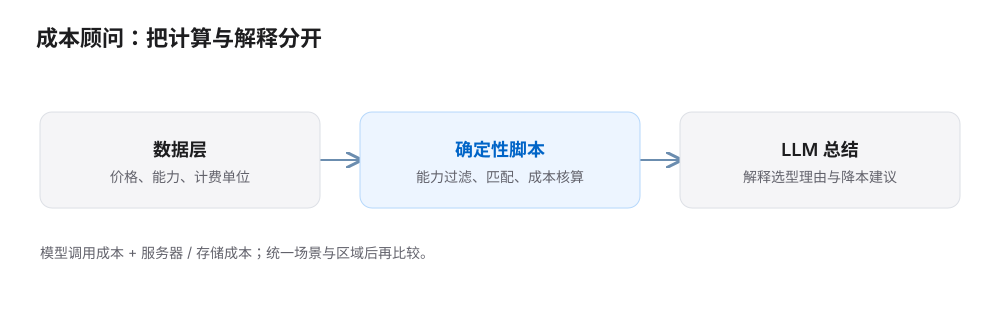

01 / 职责与成果
在内部类 Coze / Dify 工作流平台上，从测试节点、复现问题开始，逐步推进记忆工具封装、评测产品设计与成本顾问能力。
职责：平台验收与问题定位、PRD 和交互设计、工作流 Demo 搭建；与研发协作推动平台迭代。
02 / 五个阶段的推进
从现象到可复现的阻断点
围绕 Redis Set / Get / Assert 设计自动化回归思路，结合 DevTools 与日志定位 Schema、类型和变量映射问题。识别 Milvus 缺少 Insert、循环节点数据错位等阻断点。
用业务闭环定义平台能力
将 Test & Eval 拆成 Dataset Hub、Eval Runner、Report；补齐变量映射和成本要求。验证 Iterator 聚合、Python 参数传递，探索 DAG 白盒评测与 NPC / 交易员 Demo。
从通用组件转向场景化 Tool
围绕动态交易员和记忆胶囊封装可复用能力；采用 Read–Process–Write 与延迟处理绕过平台限制，并设计带预算控制的上下文组装器。
补齐记忆闭环和动态注入
跑通短对话直通、长对话归档的路由，完成 Redis 滑窗、容错清洗与记忆读取校验；搭建 Lore Engine，加入条件触发、优先级和 Token 熔断。
评测与成本能力产品化
完成 EvalFlow 前端 Demo、PRD 和页面交互迭代，打通 A/B 对撞与 Trace Diff 设计；构建价格能力底座与 Python 匹配引擎，形成成本顾问 MVP。
03 / 记忆能力的工具化
只提供 Redis / Milvus 节点，仍要求开发者理解状态、归档和上下文拼接。我把工作重点转向场景化 Tool，将搭建经验封装为更易复用的能力。
{kind=link}

| 遇到的限制 | 采用的方案 | 产品价值 |
|---|---|---|
| Python 沙盒无法直接连接 Redis | 通过外部节点 Read → Python Process → 外部节点 Write | 在平台现有能力内跑通状态闭环。 |
| 同步阻塞引擎不适合后台总结 | Lazy Processing：将耗时归档移至下一轮前置处理 | 避开当前回复中的长时间阻塞。 |
| 上下文不断增长 | 滑动窗口、摘要 / 关键事实与优先级裁剪 | 把 Token 预算变成可解释、可调的产品约束。 |
Lore Engine：让信息按条件进入上下文
将动态词条机制抽象为条件触发、优先级、防诱导和 Token 熔断，让内容注入更加确定。与记忆工具配合，服务好感度 NPC、动态交易员等有状态场景。
04 / 让评测结果可以行动
黑盒评测能发现最终输出不对，却不容易说明哪一步出了问题。EvalFlow 的设计重点是把“评测—比较—诊断—修复—再验证”串起来。
{kind=link}

- 数据与实验：明确数据集、变量映射、实验版本与成本信息。
- A/B 对撞与 Trace Diff：从整体结果下钻到节点输入输出差异和性能信息。
- 语义映射：把技术差异解释成业务问题，说明为什么错、错在哪、可以改哪一步。
- 交互联动：探索右侧操作与左侧画布联动，让分析过程可视化。
把业务目标写进评测标准
我将测试用例拆成“输入 + 预期业务目标”。例如，天气查询的验收目标是正确回应指定城市的天气信息，而不是要求回答与某句标准文本完全一致。先明确任务是否完成，再选择合适的判断方式。
| 判断对象 | 评测方式 |
|---|---|
| 格式与状态 | 用确定性规则检查必填字段、参数类型和业务状态变化，确认动作真正执行。 |
| 语义与任务 | 让 LLM 对照明确的业务目标评判输出，保留判断理由，供人工复核与问题定位。 |
| 复杂与边缘场景 | 人工查看执行路径、中间结果和最终输出，将新发现的问题转成可重复验证的用例。 |
定量评测关注功能通过率、响应时间与 Token 消耗；定性分析解释失败原因，并补充评测集。两者通过“发现问题 → 提炼用例 → 回归验证”持续衔接，让指标变化能够对应到具体的产品改进。
05 / 用确定性计算支撑成本建议
成本建议需要可核查的计算基础。我将数据、计算和解释分开，先用能力约束筛选，再用确定性脚本核算，最后让模型解释结果。
{kind=link}

- 数据底座：整理模型价格与能力矩阵，统一比较条件。
- 匹配引擎：使用 Python 做能力过滤与成本计算，减少自由生成数字带来的错误。
- 双端核算：从模型调用扩展到服务器与存储，补齐基础设施成本视角。
- 持续维护：通过 Git 版本控制和测试用例沉淀，让数据与计算逻辑可迭代。
把能力边界和决策价值一起定义
成本 Skill 的边界应停留在设计阶段的估算：根据工作流、调用次数、Token 用量和价格信息比较方案；实时账单与优惠结算交给计费系统。明确输入假设，才能解释费用差异来自哪里。
下一步的交互重点是把费用较高的节点标回画布，并给出可执行的调整建议。评估这项能力时，我会同时看使用率、用户是否据此调整方案，以及因预估不足而紧急修改工作流的情况；一次点击只能说明被使用，帮助用户做出设计决策才体现价值。
06 / 三个重要转变
从“报 Bug”到解释业务为什么被阻断
我的排查顺序是先构建最小复现用例，再沿数据流对照每个节点的预期输入、实际输出和业务状态。单个节点通过测试，仍需验证整条业务链路：NPC 能正常回复，并不代表交易动作已经完成。
提交给研发的问题应包含复现路径、中间状态、问题假设和业务影响；修复后，把触发条件补进回归用例。对失败的设计也同样重要：兜底回复要与执行状态区分，让异常可以被发现和定位。
从“组件可用”到“工具可复用”
把记忆、上下文和动态注入抽象为具体 Tool，让开发者复用经过验证的场景能力。有状态 NPC、动态交易员这样的模板，价值在于减少每次搭建时重复处理状态、异常与上下文的工作。
对 B 端工作流平台，我更关注客户采用后的总成本：能否接入现有系统、由谁维护、如何管控权限，以及出现问题时能否恢复。这些条件决定一个 Demo 能否继续走向业务使用，也决定平台能力的产品优先级。
把质量与成本放进同一迭代流程
评测定位差异，Trace 支持归因，成本核算帮助选择方案。产品交付既要能演示，也要能让研发理解边界并继续迭代。